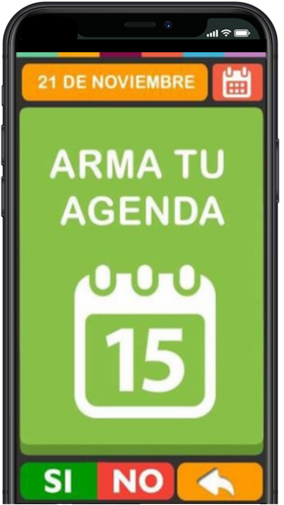
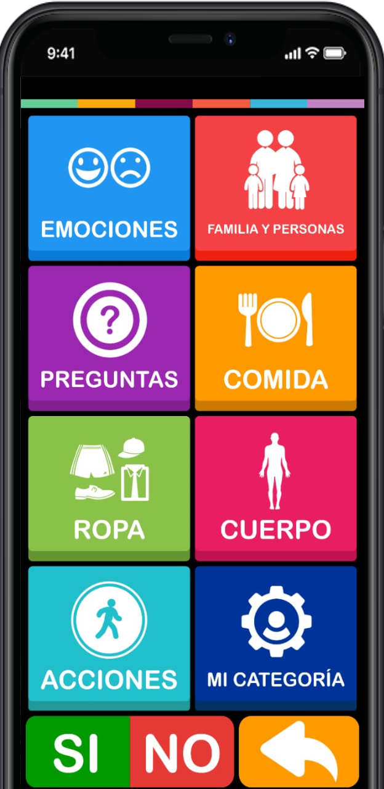
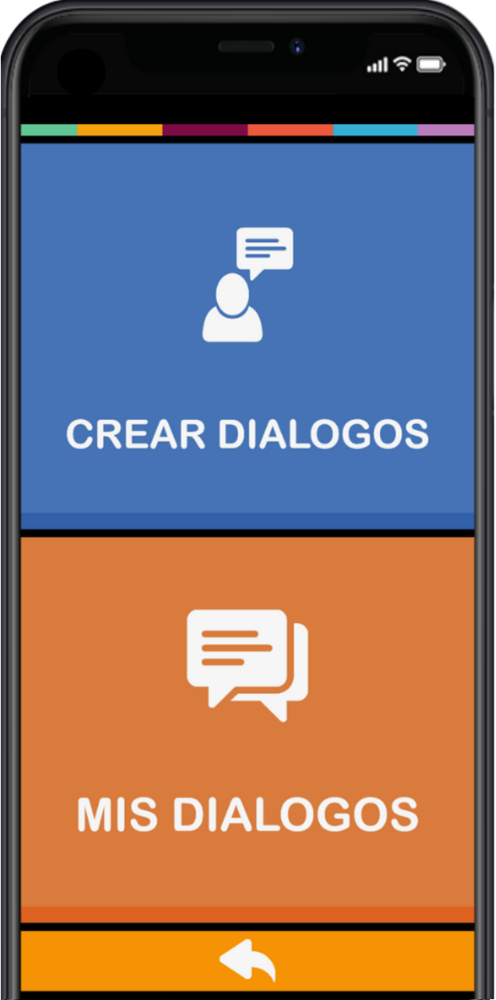
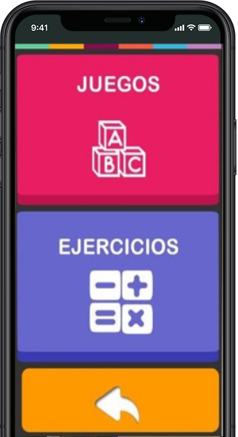

¿Que es ISay?
Mobile App
Esta aplicación ofrece un sistema interactivo, didáctico y sobre todo intuitivo que permitirá comprender las necesidades, pensamientos y deseos de aquellas personas que no pueden hacerlo mediante el habla.
COMUNICADOR
ESTIMULADOR DE EXPRESIÓN
HERRAMIENTA PSICOTERAPÉUTICA
INTERFAZ
Caracteristicas
Agenda
La agenda fue creada para ayudar a organizar el día del usuario con diferentes pictogramas.
Pictogramas
Base de pictogramas para que los usuario puedan comunicarse. Personalización tanto la imagen como el audio.
Dialogo
Esta herramienta fue creada para que el usuario pueda comunicarse mediante oraciones creadas por el mismo.
Juegos y Ejercicios
Los juegos fomentan la capacidad cognitiva y simbólica. Y los ejercicios estimulan el lenguaje y la motricidad.
ISay Web
Mediante esta plataforma Web ofrecemos a los miembros de la familia y los profesionales de la salud un lugar donde pueden ver cómo el paciente interactúa con la aplicación y así acompañarlo en su progreso.
Preguntas Frecuentes
Herramientas
RELACIONES
Las relaciones es la forma de vinculación entre los profesionales de la salud, instituciones y los familiares.
Mensajeria
Mensajes es el lugar que utilizan terapeutas y familiares para comunicarse entre si.
Historial de ACtividades
Desde el mismo acceso el médico o especialista puede tener un registro actualizado e instantáneo sobre como el paciente interactúa con la aplicación.
Historial Clinico
El historial clínico permite que cualquier persona relacionada con el usuario tenga la información necesaria ante una eventual circunstancia, y que puedan ingresar archivos como radiografías, estudios, recetas o hasta los dibujos del usuario.
Agenda
La agenda es el lugar donde podes llevar una organización en conjunto con la familia del usuario y así estar informado de lo que ocurre en la vida cotidiana del paciente.
¿Quienes Somos?

MISIÓN
Nuestra misión es la de liderar el mundo de las
herramientas de expresión, llevando la posibilidad de expresión a todos
los rincones del planeta.
ISay provee a las familias un canal para
poder comunicarse con sus seres queridos.
NOSOTROS
ISay nació de ideas y experiencias de profesionales de la salud, que se acercaron a Servicios Computables SA para desarrollar una aplicación destinadas a personas con distintos tipos de dificultad, fomentando el proceso de comunicación. Gracias al equipo de desarrolladores de Servicios Computables SA la idea empezó a materializarse.
VISIÓN
Ofrecer una herramienta de comunicación, expresión y crecimiento a las personas con dificultades, y así proveer a las familias y médicos un canal de interacción con sus seres queridos y pacientes.